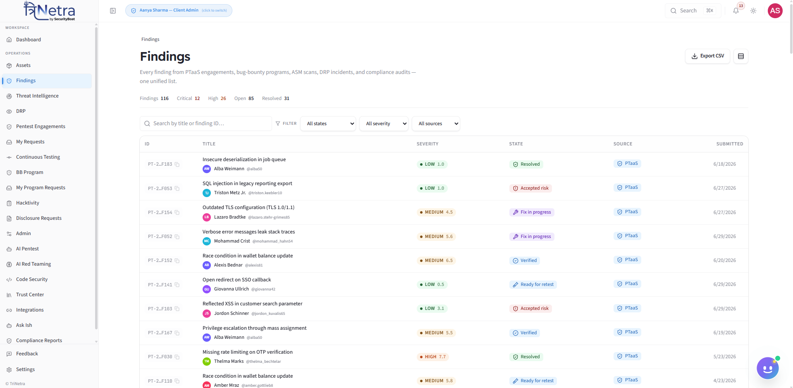
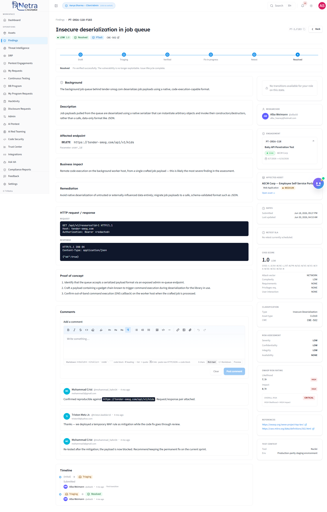

Findings
Findings
1. What a "finding" is and why the module works the way it does
A finding is a single, documented security issue discovered on one of your assets — a SQL injection, a broken access control, an exposed secret, and so on. Tri-Netra keeps one unified findings list regardless of where the issue came from:
| Source | Where it originates |
|---|---|
| PTaaS | A scheduled penetration-test engagement. |
| Bug Bounty | A researcher report on one of your Bug Bounty or VDP programs. |
| ASM | Attack-surface monitoring scans. Scan results are read inside ASM; SecurityBoat adds an exposure here as a finding when it needs formal tracking. |
| DRP | Digital-risk / incident detections. |
| Compliance | Issues raised during a compliance audit. |
The page description sums it up: "Every finding from PTaaS engagements, bug-bounty programs, ASM scans, DRP incidents, and compliance audits — one unified list."
When findings become visible to you depends on the source:
| Source | When you first see it | States you can see |
|---|---|---|
| PTaaS | After the testing team verifies it | Verified, Fix in progress, Ready for retest, Accepted risk, Resolved |
| Bug Bounty | As soon as the researcher submits it | New onward — Triaged, Pending client validation, Verified, Fix in progress, Ready for retest, Resolved, Informative, Spam |
You never see a Draft. Drafts are visible only to their author, the lead researcher, and SecurityBoat. For pentests, unverified submissions are also held back, because raw submissions can contain false positives or mis-scored severity.
2. What each client role can do
| Action | Client Admin | Client TPM | Client Viewer |
|---|---|---|---|
| View / search findings | ✅ | ✅ | ✅ |
| Open a finding's detail | ✅ | ✅ | ✅ |
| Export findings to CSV | ✅ | ✅ | ✅ |
| Read comments | ✅ | ✅ | ✅ |
| Add comments and @mention people | ✅ | ✅ | ❌ |
| Move to Fix in progress / submit for retest | ✅ | ✅ | ❌ |
| Accept risk on a pentest finding | ✅ | ❌ | ❌ |
| Confirm a Bug Bounty finding referred for client validation | ✅ | ✅ | ❌ |
| Triage Bug Bounty findings on a Self-Managed program | ✅ | ✅ | ❌ |
| Edit a finding's content | ❌ | ❌ | ❌ |
| Create a finding | ❌ | ❌ | ❌ |
Why clients can't create or edit findings: a finding must be tied to a real source (an engagement, a program, a scan) and written by the tester who found it, so its provenance and evidence can't be altered. There is intentionally no "New finding" button on this page.
Navigation
Click Findings in the main sidebar menu.
3. The Findings list — every control explained

Summary counts (top)
| Tally | Meaning |
|---|---|
| Findings | Total findings visible to you. |
| Critical | Count at Critical severity. |
| High | Count at High severity. |
| Open | Everything not yet Resolved. |
| Resolved | Fixed and closed. |
Filters (saved in the page address)
Filters are written to the page address, so a filtered view can be bookmarked or shared.
| Filter | Values / use case |
|---|---|
| Search | Search by title or finding ID… — paste an ID from an email to jump to it. |
| All states | Lifecycle states such as New, Triaged, Pending Client Validation, Verified, Fix In Progress, Ready For Retest, Accepted Risk, Resolved. |
| All severity | Critical / High / Medium / Low / Informational. |
| All sources | PTaaS, Bug Bounty, ASM, DRP, Compliance. |
| Clear | Resets all filters. |
When you filter by New, an info popover — What "New" means — explains that the word means different things per source:
- Pentest (PTaaS), shown as Triaging: the finding has been submitted and a triager is reviewing it. Next step: Verified.
- Bug bounty / VDP program, shown as New: the report is awaiting initial review. Next step: Triaged.
Columns
| Column | Meaning |
|---|---|
| ID | The finding ID (click the pill to copy it). |
| Title | Short name of the issue. |
| Severity | Colour-coded pill with the CVSS score. |
| State | Main state badge, plus a closure label (e.g. Duplicate, Not Applicable, Needs info) when relevant. |
| Source | Which module the finding came from. |
| Submitted | Relative time (e.g. "3d ago"). |
The list shows 10 per page, has a density toggle (compact / comfortable), and an Export CSV button. Click a row to open the finding.
4. Exporting findings to CSV
Export CSV opens the Export findings to CSV dialog, so you can choose exactly what goes into the file:
- Pick which findings to include with the state drop-down (default All states). Your current search and filters also apply.
- Tick the fields (columns) you want. The default selection is: Finding ID, Title, Severity, State, Vulnerability type, CVSS score, CWE ID, CVE ID, Endpoint URL, Description, Impact, Remediation, Submitter, Created at.
- Download the file.
Fields you can add include source, asset type, VRT category, the CVSS vector and its individual metrics, OWASP likelihood and impact, MITRE technique, endpoint method, parameter and raw request, HTTP request and response, background, steps to reproduce, the CIA (confidentiality, integrity, availability) levels and descriptions, tool used, environment details, references, submitter email, and updated date.
The export includes all matching findings, not only the current page (up to
10,000 rows). The State and Source columns contain the system values (for
example READY_FOR_RETEST, BUG_BOUNTY) rather than the display labels.
The same dialog is available on a pentest engagement's Findings tab.
5. The finding detail page
Click any finding to open it.

Header and stepper
- Title, severity with CVSS score, state badge, closure label (if any), and source.
- For Bug Bounty findings, the SB-Managed / Self-Managed badge of the program. Hover for its meaning.
- CWE link and a copy-ID pill.
- A lifecycle stepper showing the current stage with a short description.
Main column
| Section | Meaning |
|---|---|
| Background | Context for the vulnerability class. |
| Description | What the issue is. |
| Affected endpoint | Exactly where it was found (method, URL, parameter). |
| Business impact | What an attacker could achieve. |
| Remediation | How to fix it. This is your action plan. |
| HTTP request / response | Raw evidence. |
| Proof of concept | Reproduction steps and screenshots. |
| Comments | The discussion thread (see below). |
| Timeline | Every state change, who made it, and the note left — newest first, 10 per page with page buttons (e.g. 1–10 of 23 transitions). |
Right column
| Card | What it shows |
|---|---|
| State actions | The actions your role can take now (see below). |
| Researcher | Who reported the finding, with a link to their profile. |
| Engagement / BB Program | The pentest or program it belongs to. Bug Bounty findings show a program card. |
| Reward | Paid Bug Bounty programs: the reward for this finding. |
| Affected asset | Pentests: the asset under test. |
| Dates | Submitted, verified, resolved dates. |
| Retest SLA | A countdown while the finding is awaiting retest; otherwise "No retest currently scheduled." |
| CVSS score, Classification, Risk assessment, OWASP Risk Rating, References, Test context | Scoring and classification details. |
The State actions panel
- Open the Pick a state action… drop-down. It lists only the actions your role can take in the current state.
- Check the From → To preview.
- Enter the note. Some actions need a comment (the panel shows the minimum length); for others the note is optional and is recorded on the timeline.
- Click Confirm transition.
Pentest (PTaaS) finding lifecycle
flowchart LR
V([Verified]) -->|client starts fixing| F([Fix in progress])
F -->|client submits fix| R([Ready for retest])
R -->|tester confirms fix| D([Resolved])
R -->|retest failed| F
V -.->|Client Admin| AR([Accepted risk])
F -.->|Client Admin| AR
R -.->|Client Admin| AR| Action | Who | When to use it | Input required |
|---|---|---|---|
| Acknowledge and start fixing (Verified → Fix in progress) | Client Admin / Client TPM | You have started remediating. | Optional note |
| Submit fix for retest (Fix in progress → Ready for retest) | Client Admin / Client TPM | Your fix is deployed; ask the tester to re-verify. | Optional note |
| Accept risk formally (→ Accepted risk) | Client Admin only | You formally accept the risk instead of fixing it. Available from Verified, Fix in progress, or Ready for retest. | Justification, at least 20 characters |
| Clear NEEDS_INFO (info provided) | Client Admin / Client TPM | The tester asked for more information and you have provided it. | At least 10 characters |
| Confirm fix verified / Retest failed — send back to fix | The tester (not you) | The tester re-tests your fix. | — |
Bug Bounty finding lifecycle
Bug Bounty findings follow a different path, including triage and an optional client-validation step on SB-Managed programs. See Program Findings for the diagram and who does what.
Comments
Use the comments thread to ask the tester questions, attach remediation notes, or discuss severity.
- @mentions: type @ to open Mention a participant and notify someone on the finding.
- Visibility: client roles choose who can see a comment:
| Option | Who can see it |
|---|---|
| Everyone | All participants on the finding, including researchers. |
| Internal | Your team and SecurityBoat staff. Researchers cannot see it. |
SecurityBoat staff can also post comments marked Visible to Client, which only your team and SecurityBoat see. - Every comment shows a Visible to … pill. - You can edit your own comment for a short time after posting (15 minutes) and delete your own comments. - Client Viewer can read comments but cannot post.
Best practices
- Work Critical/High first — the summary counts make the backlog obvious.
- Move findings through the states honestly. Submitting for retest before the fix is deployed wastes a retest cycle.
- Use comments, not email. Use Internal when the discussion should not reach the researcher.
- Accept risk deliberately. Only a Client Admin can, and it needs a clear business justification.
- Export only the columns you need for each audience.
Troubleshooting
| Symptom | Cause / Fix |
|---|---|
| A pentest finding I was told about isn't in my list | It hasn't been verified yet. It appears once the testing team verifies it. |
| A Bug Bounty finding a researcher mentioned isn't in my list | It is still a Draft on the researcher's side. |
| No State actions available | You're Client Viewer, or no action is open to your role in the current state. |
| Can't "Accept risk" | Only Client Admin can accept risk, and only on pentest findings. |
| Confirm transition is disabled | You haven't picked an action yet, or the required comment is too short. |
CSV shows codes like FIX_IN_PROGRESS |
Expected — the export uses system values for State and Source. |
← Previous: Assets | Next: Engagements →